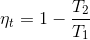
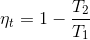

Берілгені:
t1 = 2500 ℃
t2 : 200 → 100 ℃
Т/к η t (Карно циклоның ПӘК қалай өзгереді?)
*Ответ округляется до сотых (Өрнек: 2.94)
t1 = 2500 ℃
t2 : 200 → 100 ℃
Т/к η t (Карно циклоның ПӘК қалай өзгереді?)
*Ответ округляется до сотых (Өрнек: 2.94)
T2 = t2 + 273 = 473 К
ПӘК: 0.83
T2 = t2 + 273 = 373 К
ПӘК: 0.87
Δηt Карно циклының ПӘК өсуі (%):
((0.87 - 0.83)/0.87) * 100 = 4.16%